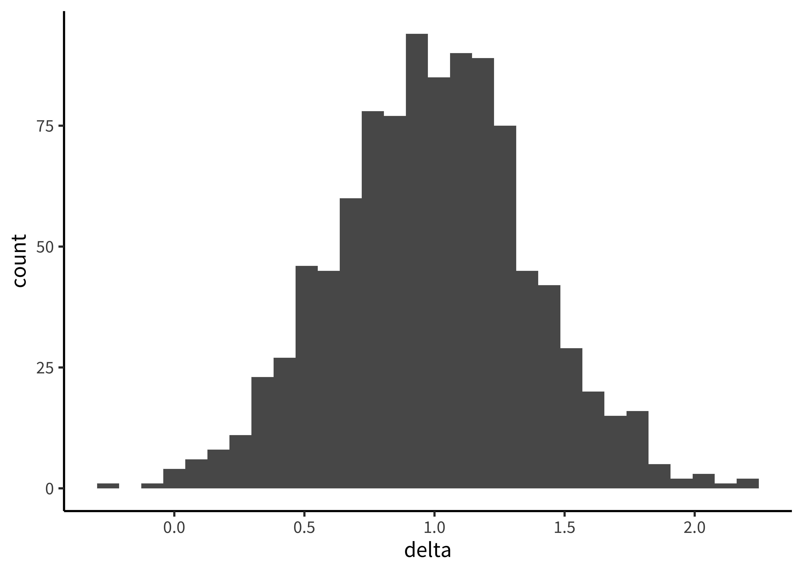

Chapter 5 Inference
🍎 Learning goals:
- Discuss the function of statistical inference
- Contrast inference and estimation as two goals of statistical analysis
- Define \(p\)-values and Bayes Factors
- Consider the fallacies of inference (especially for \(p\)-values)
We’ve been arguing that experiments are about measuring effects. You might ask then, why does this book even need a chapter about statistical inference? Why can’t we just report our estimates and be done? The answer is that we are not typically interested in the characteristics of our sample specifically. Statistical inference is the process of going beyond the specific characteristics of the sample that you measured to make generalizations about the broader population.
Inference methods allow us to ask questions like:
- How likely is it that this pattern of measurements was produced by chance variation?
- Do these data provide more support for one hypothesis or another?
- How big is the effect of a manipulation, and how precise is our estimate of that effect?
- What portion of the variation in the data is due to a particular manipulation (as opposed to variation between participants, stimulus items, or other manipulations)?
Question (1) is associated with one particular type of statistical inference method – null hypothesis significance testing (NHST) in the frequentist statistical tradition. NHST has become synonymous with data analysis, such that in the vast majority of research papers (and research methods courses), all of the reported analyses are tests of this type. Yet the equivalence of NHST – in particular, the dichotomous inference that something is “significant” or not – and the idea of data analysis more generally has been quite problematic.
The instinct to “go test for significance” before visualizing your data and trying to understand sources of variation (participants, items, manipulations, etc.) is one of the most unhelpful things an experimenter can do. Whether \(p < .05\) or not, a test of this sort gives you literally one bit of information about your data.51 In the information theoretic sense, as well as the common sense! The kinds of visualizations we advocate in Chapter 14 give you a much richer sense of what happened in your experiment!
In this chapter, we will describe NHST, the conventional method that many students still learn (and many scientists still use) as their primary method for engaging with data. All practicing experimentalists need to understand NHST, both to read the literature and also to apply this method in appropriate situations. For example, NHST is a reasonable tool for testing whether an intervention leads to a difference between a treatment condition and an appropriate control, although it still doesn’t tell you about the size of the intervention effect! But we will also try to contextualize NHST as a very special case of a broader set of strategies around modeling and inference. Further, we will continue to flesh out our account of how some of the pathologies of NHST have been a driver of the replication crisis.
 Clarifying the distinctions between Bayesian and Frequentist paradigms and the ways that they approach inference and estimation. For many settings, we think the estimation mindset is more useful. From Kruschke and Liddell (2018).
Clarifying the distinctions between Bayesian and Frequentist paradigms and the ways that they approach inference and estimation. For many settings, we think the estimation mindset is more useful. From Kruschke and Liddell (2018).
What should replace NHST? There has been a recent move towards the use of Bayes Factors to quantify the evidence in support of a hypothesis. Bayes Factors can help answer questions like (2). We introduce these tools, and believe that they have broader applicability than the NHST framework and should be known by students. On the other hand, Bayes Factors are not a panacea. They have the same problems as NHST when they are applied dichotomously.
Instead of dichotomous inference, we advocate for estimation and modeling strategies, which are more suited towards questions (3) and (4) (Cumming, 2014; J. K. Kruschke & Liddell, 2018). The goal of these strategies is to yield an accurate and precise estimate of the relationships underlying observed variation in the data. Critically, one of these estimates is the causal effect of the experimental manipulation(s). That explains our affection for these approaches: if a good theory predicts these kinds of causal effects, it makes sense that we’d want to estimate them precisely!
Estimating one quantity in isolation is not maximally effective, though, since often there will be variation in the estimate that has to do with other known sources. Imagine the Stroop effect, which has a fairly consistent effect on both fast and slow readers (Haaf & Rouder, 2017). But estimates of this effect will be more precise if we take into account that some readers are slower or faster, rather than just averaging across all this variation. That’s why we need models that take into account different sources of variation.
This isn’t a statistics book and we won’t attempt to teach the full array of important statistical concepts that will allow students to build good models of a broad array of datasets. (Sorry!).52 If you’re interested in going deeper, here are two books that have been really influential for us. The first is Gelman & Hill (2006), which teaches regression and multi-level modeling from the perspective of data description and modeling. The second is McElreath (2018), a course on building Bayesian models of the causal structure of your data. Honestly, neither is an easy book to sit down and read (unless you are the kind of person who reads stats books on the subway for fun) but both really reward detailed study. We encourage you to get together a reading group and go through the exercises together. It’ll be well worth while in its impact on your statistical and scientific thinking. But we do want you to be able to reason about inference and modeling. In this chapter, we’ll start by looking at a case study that established modern statistical inference, using this example to build up intuitions about inference and estimation. Then in Chapter 6, we’ll focus on the case where there is a manipulation (experimental treatment vs. control) and we want to estimate its effect.
5.1 The lady tasting tea
The second innovation was the idea of creating a model of what might happen during the experiment: specifically, a null model in which the nameless lady chose cups by chance rather than because of some tea sensitivity. The goal of Fisher’s analysis strategy was then to compute the probability of the lady’s choices under this null model. Fisher then declared that it is “usual and convenient for experimenters to take 5 percent as a standard level of convenience,” establishing the .05 cutoff that has become gospel throughout the sciences.53 Actually, right after establishing .05 as a cutoff, Fisher then writes that “in the statistical sense, we thereby admit that no isolated experiment, however significant in itself, can suffice for the experimental demonstration of any natural phenomenon… in order to assert that a natural phenomenon is experimentally demonstrable we need, not an isolated record, but a reliable method of procedure. In relation to the test of significance, we may say that a phenomenon is experimentally demonstrable when we know how to conduct an experiment which will rarely fail to give us a statistically significant result.” In other words, Fisher was all for replication!
With apologies to Fisher, for our example, we’ll design a slightly more modern version of his experiment using a forced-choice judgmeent measure. We present participants with a series of cups of tea (in random order, of course). Half are prepared milk-first, half tea-first. Then the participant must give an independent judgement about each. The null model is based on the idea that, if the participant knows nothing then they should choose at random between the two possibilities. Hence, we can use a simple binomial distribution to show expected chance performance for different sets of trials.54 We quantify our measure as the proportion of correct trials, since trials here are interchangeable.
These null distributions are shown in Figure 5.1.[^MM: The concept of a “null distribution” probably needs more scaffolding. In my experience with accidentally driving students crazy, I find that I have to go extremely slowly the first time I discuss sampling distributions.] We show cases with 6, 12, 24, and 48 trials, and highlight the .05 significance threshold – the threshold above which you would fall only 5% of the time if you were guessing by chance.55 Note that we are effectively doing a “one-tailed” test here, since we’re attending only to the right hand side of each plot and ignoring cases where the participant is exactly flipped in their judgments. Conventionally, if you cross this threshold, you can say you “reject the null.”
Figure 5.1: Probability of observing a particular number of trials correct under the null model of no sensitivity to tea preparation order. Each facet gives a different number of trials. The red line indicates a significance threshold above which data have less than a 5% chance of appearing.

The more trials a participant completes, the lower the accuracy threshold for significance becomes. With 6 trials, you need to get all 5 correct for that result to have a probability of less than 5% probable under the null model. With 12, you need to observe 10 (83%) or more. With 24 and 48, you need 17 (71%) and 31 (65%) respectively.56 You can calculate these numbers by looking at what’s called the quantile function of the binomial binomial: the function that tells you how many correct trials out of the total number corresponds to a particular probability. With greater numbers of trials, the expectation based on chance becomes more precise and so we are able to reject then null based on smaller deviations.
Even here in the original case of null hypothesis significance testing, it is clear that our goals matter. If we’re merely testing a hypothesis informally at a garden party, perhaps we don’t want to subject our friend to dozens of trials. But if the stakes were higher and a more precise estimate was necessary, maybe we’d want to do a more extensive experiment!
Something very important is missing from this analytic strategy. If we think back to our goals as experimentalists, we are hoping to use the logic of random assignment to measure causal effects of interest. Here, the effect we’re measuring is something like the effect of tea preparation on taste perception (maybe not the most consequential question, but…). Yet our statistical paradigm is misaligned with this goal! All of this talk of significance and rejecting the null doesn’t tell us about either how big the effect is, or how precisely we have measured it! That’s why we are going to be advocating throughout for estimation as the key goal for our statistical analysis, with the varieties of inference (significance testing included) as a secondary goal.[^MM: This confuses me. Confidence intervals, continuous p-values, and continuous BFs are varieties of inference as well. To me the critical distinction is between dichotomized inference and continuous inference, not between estimation and inference.]
Fisher’s original framework for significance testing focused only on the null hypothesis of no discrimination. In contrast, the Bayesian estimation method here focuses on the magnitude of accuracy.57 If you’re reading carefully, you might have noticed that we could have discovered that the estimate of accuracy was very similar to chance – more about this below and in the next chapter. The intuition we’d like you to get is that, if you are an experimentalist who cares about the magnitude of causal relationships (and we hope you are), then Fisher’s statistical approach isn’t ideally suited to your goals.[^MM: Yes, I like this framing in the final sentence much better.]
5.2 Precision and Uncertainty
In the previous section, we discussed how to estimate means and differences in means from our observed data.[^17] These so-called “point estimates” represent our best guesses about the population parameters given the data and possibly also given our prior beliefs. But on their own, point estimates do not say anything about how much statistical uncertainty is involved in these point estimates.58 Note that the measures of variability that we discuss here account for statistical uncertainty reflecting the fact that we have only a finite sample size. If the sample size were infinite, there would be no uncertainty of this kind. Of course, this is only one kind of uncertainty, and a more holistic view of the overall credibility of an estimate must also account for study design and bias, for example. If we were to repeat the tea-tasting experiment with 500 participants instead of 48, it’s clear intuitively that we would have less uncertainty with 500 participants, even if the point estimates happened to be identical.
Why is this so? To characterize the uncertainty in an estimate, it helps to picture what is called its sampling distribution, which is the distribution of the estimate itself across different, hypothetical samples. That is, let’s imagine – purely hypothetically – that we conducted the tea experiment with \(n=48\) not just once, but hundreds or even thousands of times. Each time, we use similar recruitment methods to recruit a new sample of participants, and we estimate \(\widehat{\Delta}\) in that sample. Would we get exactly the same answer each time? No, simply because the samples will have some random variability. If we plotted these estimates, \(\widehat{\Delta}\), across thousands of samples, we would get the sampling distribution:

Now imagine we also did thousands of repetitions of the experiment with \(n=500\) instead of \(n=48\). Here is what the sampling distribution would look like:

Notice how much narrower the sampling distribution becomes when we increase the sample size, again reflecting decreased uncertainty. More formally, the standard deviation of the sampling distribution itself, called the standard error, decreases as the sample size increases.
It is critical to note that the sampling distribution is not at all the same thing as the distribution of tea ratings in a single sample. The sampling distribution is a distribution of estimates across samples of a given size, not a distribution of tea ratings across participants in a single sample. Internalizing this distinction is a crucial component to understanding all statistical models and tests. If we were in the classroom with you, we would pound our fist on the lecture podium for emphasis.
An amazing thing about sampling distributions for many kinds of estimates, and for all maximum likelihood estimates, is that they become normal as the sample size gets larger and larger. The amazing part is that this holds even for estimates that are not even remotely normal in small samples. For example, say we have a possibly biased coin, and we want to estimate the probability that it lands heads (\(p_H\)). If we draw samples each consisting of only \(n=2\) coin flips, here is the sampling distribution of the estimates \(\widehat{p}_H\):
\[COIN FLIP SAMPLING DISTRIBUTION AT N=2\]
Of course, this isn’t at all normal because \(\widehat{p}_H\) can only take on the values 0, 0.5, or 1 in a sample of only 2 coin flips. But look what happens as we draw increasingly larger samples:
\[COIN FLIP SAMPLING DISTRIBUTION WITH INCREASING N'S\]
We get a normal distribution! This tendency of sampling distributions to become normal as \(n\) becomes very large reflects a deep and elegant mathematical law called the Central Limit Theorem. Aesthetic swooning aside, the practical upshot is that the Central Limit Theorem directly helps us characterize the uncertainty of sample estimates. For example, when the sample size is reasonably large (approximately \(n>30\) in the case of sample means) the standard error (i.e., the standard deviation of the sampling distribution) of a sample mean is approximately \(\sigma/\sqrt{n}\). That is why the sampling distribution becomes narrower as the sample size increases.
\[Next up: On to confidence intervals\]
- Put an exercise about sampling distribution versus distribution in sample
5.2.1 Confidence intervals
CIs for inference
Confidence intervals: 95% of these regions will contain the TRUE parameter Remember frequentists - there is a TRUE parameter
https://istats.shinyapps.io/ExploreCoverage/
But this is not our typical interpretation, which is that 95% chance parameter is in this interval That’s the BAYESIAN interpretation
Bayesian Estimation
Find the posterior distribution of the parameter of interest You can take its mean Its HPD (highest posterior density)
Confidence in confidence intervals: https://link.springer.com/article/10.3758/s13423-015-0947-8
5.2.2 Visualizing variability
Error bar: - standard deviation (why is this bad)? - SEM - CI
5.3 Summary: Inference
We just finished arguing that an estimation strategy is more aligned with the default goal of an experimentalist. But that’s not always the case. Sometimes you do want to make an inference, in the sense of making some kind of rule-based decision about your data. The clearest case of this is in the context of an experiment that evaluates an intervention – say a curriculum manipulation to improve an educational outcome. In this kind of case, we might primarily want a clear answer: does this intervention “work” – meaning, improve our outcome relative to control – or not. In this kind of context, perhaps the magnitude of the effect is going to be so dependent on the specifics of implementation that we don’t really have a lot of predictions about the magnitude.
So, how do we decide whether our data support a positive conclusion? There are at least two different common ways to set up this kind of inference. One of these is Fisher’s way: null hypothesis significance testing. The second is via a technique called the Bayes Factor. Since we’ve already talked about NHST a bit, we’ll introduce the Bayes Factor first. Then we can see how NHST relates.
5.3.1 Bayes Factors
Bayes Factors are a method for quantifying the support for one hypothesis over another, based on an observed dataset. Informally, we’ve now talked about two different distinct hypotheses about the tea situation: our participant could have no tea discrimination ability – leading to chance performance. We call this \(H_0\). Or they could have some non-zero ability – leading to greater than chance perfomance. We call this \(H_1\). The Bayes Factor is simply the likelihood of the data (in the technical sense used above) under \(H_1\) vs. under \(H_0\):
\[ BF = \frac{\color{red}{p(d | H_1)}}{\color{red}{p(d | H_0)}}. \] The Bayes Factor is a ratio, so if it is greater than 1, the data are more likely under \(H_1\) than they are under \(H_0\) – and vice versa for values between 1 and 0. A BF of 3 means there is three times as much evidence for \(H_1\) than \(H_0\), or equivalently 1/3 as much evidence for \(H_0\) as \(H_1\).59 Sometimes people refer to the BF in favor of \(H_1\) as the \(BF_{10}\) and the BF in favor of \(H_0\) as the \(BF_{01}\). This notation strikes us as a bit confusing because a reader might wonder what the 10 in the subscript means. There are no hard and fast rules for Bayes Factor interpretation, but many people follow guidelines from Jeffreys (1998), shown in the margin.[^MM: This table with BF cutoffs is a prime example of my concern above. Reporting inference in terms of, e.g., BF > 3 or < 3 (a distressing trend in psych papers these days) is really no better than reporting \(p<0.05\) or \(p\ge0.05\).]
Table 5.1: Jeffreys’ (1961/1998) interpretation guidelines for Bayes Factors.
| BF range | Interpretation |
|---|---|
| < 1 | Negative evidence (supports H0) |
| 1 – 3 | Barely worth mentioning |
| 3 – 10 | Substantial |
| 10 – 30 | Strong |
| 30 – 100 | Very strong |
| > 100 | Decisive |
There are a couple of things to notice about the Bayes Factor. The first is that it is a continous measure. You can dichotomize decisions based on the Bayes Factor by declaring a cutoff (say, BF > 3 or BF > 10), there is no intrinsic threshold at which you would say the evidence is “significant.”60 Of course this is true for \(p\)-values too, but the \(p < .05\) criterion is so culturally ingrained in most scientists that it’s hard to get away from. MM: This symmetry is crucial! This deserves to be in the main text. Second, it doesn’t depend on our prior probability of \(H_1\) vs. \(H_0\). We might think of \(H_1\) as very implausible. But the BF is independent of that prior belief. So that means it’s a measure of how much the evidence should shift our beliefs away from our prior. One nice way to think about this is that the Bayes Factor computes how much our beliefs – whatever they are – should be changed by the data (Morey & Rouder, 2011).
In practice, the thing that is both tricky and good about Bayes Factors is that you need to define an actual model of what \(H_0\) and \(H_1\) are. That process involves making some assumptions explicit. We won’t go into how to make these models here – this is a big topic that is covered extensively in books on Bayesian data analysis.61 Two good ones are Gelman et al. (1995) (a bit more statistical) and J. Kruschke (2014) (a bit more focused on psychological data analysis). An in-prep web-book by Nicenboim et al. also looks great. Below and in Chapter 6 we will provide some guidance for how to compute Bayes Factors for simple experimental designs. The goal here is just to give a sense of how they work.
To continue our tea-tasting example, let’s continue to assume our participant gets 9 of 12 trials right. Now to compute a Bayes Factor, we will have to define our hypotheses. Defining the null is pretty simple – it should just be that choices are random coin flips. But to define our \(H_1\) things get a bit more complex. We could just assume that the participant should get 75% percent of trials correct, but this could be a problematic choice! For example, what if our participant got 550 / 1000 trials correct? That would give us a strong sense that they had some tea ability, but would actually be more consistent with the \(H_0\) of 50% accuracy than the \(H_1\) of 75% accuracy! In practice, what we need to do is define a distribution over possible accuracies and then average across these – so we assign some probability to 75% accuracy but also some probability to 55% accuracy and even 50% accuracy.62 You might wonder how we can compare a \(H_0\) that assumes 50% accuracy and a \(H_1\) that includes 50% accuracy in it as well. The key here is that \(H_1\) is more complex because it includes a range of values.. The details don’t matter here, but just for simplicity we adopt the discrimination prior shown in Figure 4.2.
Once we set up our models, we can compute the relative likelihood of the data under each. The resulting BF is 2.96, somewhere between anecdotal and substantial evidence. On the other hand, if we doubled the size of the experiment and found the same pattern – 18/24 trials correct – the BF goes up to 11.17, which we could classify as strong evidence.
5.3.2 p-values
We already have a working definition of what a \(p\)-value is from our discussion above: it’s the probability of the data (or any data that would be more extreme) under the null hypothesis. How is this quantity related to either our Bayesian estimate or the BF? Well, the first thing to notice is that the \(p\)-value is very close (but not identical to) the likelihood itself[^MM: Suggesting rewording to avoid suggesting that the Bayesian likelihood is different from the frequentist likelihood], which is the probability of the data but doesn’t include any more extreme data. So for example, the probability of getting 9 out of 12 tea-tasting trials correct under the null hypothesis is 0.05, meaning there’s a 5% chance of observing exactly this many successes. But the p-value is given by the summed probability of 9, 10, 11, and 12 successes, which is 0.07. In Table 5.2, you can see how \(p\)-values (from a one-tailed exact binomial test) compare to our Bayes Factors. In general BFs tend to be a bit more conservative than \(p\)-values, such that \(p<.05\) generally translates to a BF of 3 or less (Benjamin et al., 2018).
Table 5.2: Comparison of p-value and BF for several different tea-tasting scenarios. p-values are one-tailed. Note that BF is heavily dependent on the specific prior on tasting successes that we assign.
| Successes | Total trials | % accuracy | p value | BF |
|---|---|---|---|---|
| 3 | 3 | 1.00 | 0.125 | 3.732 |
| 6 | 6 | 1.00 | 0.016 | 17.214 |
| 12 | 12 | 1.00 | 0.000 | 501.764 |
| 9 | 12 | 0.75 | 0.073 | 2.960 |
| 18 | 24 | 0.75 | 0.011 | 11.169 |
| 36 | 48 | 0.75 | 0.000 | 194.031 |
| 55 | 100 | 0.55 | 0.184 | 0.199 |
| 550 | 1000 | 0.55 | 0.001 | 5.626 |
The critical thing about \(p\)-values is not just that they are a specific kind of data likelihoods, it is that they are used in a specific inferential procedure The logic of NHST is that we make a binary decision about the presence of an effect. If \(p < .05\), the null hypothesis is rejected; otherwise not. As Fisher (1949) wrote,
It should be noted that the null hypothesis is never proved or established, but is possibly disproved, in the course of experimentation. Every experiment may be said to exist only in order to give the facts a chance of disproving the null hypothesis. (p. 19)
This logic relates to the falsificationist logic of Popper that we touched on briefly in 1. Under NHST, null hypotheses can be rejected (essentially, falsified) but positive hypotheses cannot be supported. As we said then, this logic doesn’t appear either optimal from a normative statistical perspective – and as we’ll discuss below, it doesn’t really fit with a descriptive view of how scientists (and people more generally) reason about their hypotheses.
 Figure 5.2: Standard decision matrix for NHST.
Figure 5.2: Standard decision matrix for NHST.
One way to “patch” NHST is to introduce a decision-theoretic view, shown in Figure 5.2.63 A little bit of useful history here is given in Cohen (1990). On this view, there is a real \(H_1\), albeit one that is not specified. Then the true state of the world could be that \(H_0\) is true or \(H_1\) is true. The \(p<.05\) criterion is the threshold at which we are willing to reject the null, and so this constitutes our false positive rate \(\alpha\). But we also need to define a false negative rate, which is conventionally (and unhelpfully) called \(\beta\). Setting these rates is a decision problem: If you are too conservative in your criteria for the intervention having an effect, however, then you risk a false negative, where you incorrectly conclude that it doesn’t work. And if you’re too liberal in your assessment of the evidence, then you riks a false positive.64 To make really rational decisions, you could couple this chart to some kind of utility function that assessed the costs of different outcomes. For example, you might think it’s worse to proceed with an intervention that doesn’t work than to stay with business as usual. In that case, you’d assign a higher cost to a false positive and accordingly try to adopt a more conservative criterion. We won’t cover this kind of decision analysis here, but Pratt et al. (1995) is a classic textbook on statistical decision theory if you’re interested. In practice, however, mostly people leave \(\alpha\) at .05 and try to control their false negative rate by increasing their sample size. As we saw in Figure 5.1, the greater the sample, the better your chance of rejecting the null for any given non-null effect. This model gives rise to the idea of classical power analysis, which we cover in Chapter 9.
Figure 5.3: Standard decision matrix for NHST.
One way to “patch” NHST is to introduce a decision-theoretic view, shown in Figure 5.2.65 A little bit of useful history here is given in Cohen (1990). On this view, there is a real \(H_1\), albeit one that is not specified. Then the true state of the world could be that \(H_0\) is true or \(H_1\) is true. The \(p<.05\) criterion is the threshold at which we are willing to reject the null, and so this constitutes our false positive rate \(\alpha\). But we also need to define a false negative rate, which is conventionally (and unhelpfully) called \(\beta\). Setting these rates is a decision problem: If you are too conservative in your criteria for the intervention having an effect, however, then you risk a false negative, where you incorrectly conclude that it doesn’t work. And if you’re too liberal in your assessment of the evidence, then you riks a false positive.66 To make really rational decisions, you could couple this chart to some kind of utility function that assessed the costs of different outcomes. For example, you might think it’s worse to proceed with an intervention that doesn’t work than to stay with business as usual. In that case, you’d assign a higher cost to a false positive and accordingly try to adopt a more conservative criterion. We won’t cover this kind of decision analysis here, but Pratt et al. (1995) is a classic textbook on statistical decision theory if you’re interested. In practice, however, mostly people leave \(\alpha\) at .05 and try to control their false negative rate by increasing their sample size. As we saw in Figure 5.1, the greater the sample, the better your chance of rejecting the null for any given non-null effect. This model gives rise to the idea of classical power analysis, which we cover in Chapter 9.
5.4 Inference fallacies
\(p\)-values are basically likelihoods. The likelihood of the data under the null hypothesis is a critical number to know – for computing the Bayes Factor among other reasoms. But it doesn’t tell us a lot of things that we might like to know! For example, it doesn’t tell us the probability of the data under any positive hypothesis that we might be interested in – that’s the posterior probability \(p(H_1 | d)\). Lots of folks mistake these two for one another, e.g. that the probability of the data given the null is the probability of the null given the data.
Another \(p\)-value problem that comes up frequently is what to conclude when \(p>.05\). According to the classical logic of NHST, the answer is “nothing!” That is, a failure to reject the null does not mean that you can accept the null. Even if the probability of the data (or some more extreme data) under \(H_0\) is high, their probability might be just as high or higher under \(H_1\).67 Of course, weighing these two against one another brings you back to the Bayes Factor. But many practicing researchers make this mistake. Aczel et al. (2018) coded a sample of articles from 2015 and found that 72% of negative statements were inconsistent with the logic of their statistical paradigm of choice – most were cases where researchers said that an effect was not present when they had simply failed to reject the null.
These are not the only issues with \(p\)-values. In fact, people have so much trouble understanding what \(p\)-values do say that there are whole articles written about these misconceptions. Table 5.3 shows a set of misconceptions documented and refuted by S. Goodman (2008).
Table 5.3: A “dirty dozen” p value misconceptions. Adapted from Goodman (2008).
| Misconception | |
|---|---|
| 1 | If p = .05, the null hypothesis has only a 5% chance of being true. |
| 2 | A nonsignificant difference (eg, p ≥.05) means there is no difference between groups. |
| 3 | A statistically significant finding is clinically important. |
| 4 | Studies with p values on opposite sides of .05 are conflicting. |
| 5 | Studies with the same p value provide the same evidence against the null hypothesis. |
| 6 | p = .05 means that we have observed data that would occur only 5% of the time under the null hypothesis. |
| 7 | p = .05 and p ≤.05 mean the same thing. |
| 8 | p values are properly written as inequalities (eg, 'p ≤.02' when p = .015) |
| 9 | p = .05 means that if you reject the null hypothesis, the probability of a false positive error is only 5%. |
| 10 | With a p = .05 threshold for significance, the chance of a false positive error will be 5%. |
| 11 | You should use a one-sided p value when you don’t care about a result in one direction, or a difference in that direction is impossible. |
| 12 | A scientific conclusion or treatment policy should be based on whether or not the p value is significant. |
Further, the \(p\)-value is a probability of a certain set of events happening (corresponding to the observed data or any “more extreme” data, that is to say, data further from the null). Since \(p\)-values are probabilities, we can combine them together across different events. If we run a null experiment – an experiment where we know the expected effect is zero – the probability of a dataset with \(p < .05\) is of course .05. But if we run two such experiments, we can get \(p < .05\) with probability 0.1. By the time we run 20 experiments, we have an 0.64 chance of getting a positive result.
It would obviously be a major mistake to run 20 null experiments and then report only the positive ones (which, by design, are false positives) as though these still were “statistically significant.” The same thing applies to doing 20 different statistical tests within a single experiment. There are many statistical corrections that can be made to adjust for this problem.68 The simplest one, the Bonferroni correction, just divides .05 (or technically, whatever your threshold is) by the number of comparisons you are making. Using that correction, if you do 20 null experiments, you would have a 0 chance of a false positive, which is actually a little conservative. But the the broader issue is one of transparency: unless you know what the appropriate set of experiments or tests is, it’s not possible to implement one of these corrections!69 This issue is especially problematic with \(p\)-values because they are so often presented as an independent set of tests, but the problem of multiple comparisons comes up when you compute a lot of independent Bayes Factors as well. “Posterior hacking” via selective reporting of Bayes Factors is perfectly possible (Simonsohn, 2014).
⚠️ Accident report: Do extraordinary claims require extraordinary evidence?
In a blockbuster paper that inadvertently kicked off the replication crisis, Bem (2011) presented nine experiments showing evidence for precognition – that is, sensing the future. In the first of these experiments, Bem showed each of a group of 100 undergraduates 36 two-alternative forced choice trials in which they had to guess which of two locations on a screen would reveal a picture immediately before the picture was revealed. By chance, participants should choose the correct side 50% of the time of course. Bem found that, specifically for erotic pictures, participants’ guesses were 53.1% correct. This rate of guessing was unexpected under the null hypothesis of chance guessing (\(p = .01\)). Eight other studies with a total of more than 1,000 participants yielded apparently supportive evidence, with particpants appearing to show a variety of psychological effects even before the stimuli were shown! On this basis, should we conclude that precognition exists?
Probably not. Wagenmakers et al. (2011) gave an influential critique of Bem’s findings, arguing that 1) Bem’s experiments were exploratory in nature, 2) that Bem’s conclusions were a priori unlikely, and 3) that the level of statistical evidence from his experiments was quite low. We find each of these arguments alone compelling; together they present a knockdown case.
First, we’ve already discussed the need to be skeptical about situations where experimenters have the opportunity for analytic flexibility in their choice of measures, manipulations, samples, and analyses. Flexibility leads to the possibility of cherry-picking those set of decisions from the “garden of forking paths” that lead to a positive outcome for the researcher’s favored hypothesis. And there is plenty of flexibility on display even in Experiment 1 of Bem’s paper. Although there were 100 participants in the study, they may have been combined post hoc from two distinct samples of 40 and 60, each of which saw different conditions. The 40 made guesses about the location of erotic, negative, and neutral pictures; the 60 saw erotic, positive non-romantic, and positive romantic pictures. The means of each of these conditions was presumably tested against chance (at least 6 comparisons, for a false positive rate of 0.26), and had positive romantic pictures been found significant, an interpretation would have been available about this condition.
Second, as we discussed, a \(p\)-value close to .05 does not necessarily provide strong evidence against the null hypothesis. Wagenmakers et al. computed the Bayes Factor for each of experiments in Bem’s paper and found that, in many cases, the amount of evidence for \(H_1\) was quite modest under a default Bayesian \(t\)-test. Experiment 1 was no exception: the BF was 1.64, giving “anecdotal” support for the hypothesis of some non-zero effect, even before the multiple-comparisons problem mentioned above.
Finally, since precognition is not attested by any compelling prior scientific evidence – and many researchers have tried to provide this evidence – perhaps we should assign a low prior probability to Bem’s \(H_1\), a non-zero precognition effect. Taking a strong Bayesian position, Wagenmakers et al. suggest that we might do well to adopt a prior reflecting how unlikely precognition is, say \(p(H_1) = 10^{-20}\). And if we adopt this prior, even a very well-designed, highly informative experiment (with a Bayes factor conveying substantial or even decisive evidence) would still lead to a very low posterior probability of precognition.
Wagenmakers et al. concluded that, rather than suppporting precognition, the conclusion from Bem’s paper should be psychologists should revise how they think about analyzing their data!70 If you are intrigued by this set of issues, you might enjoy Slate Star Codex’s post “The Control Group is Out of Control” – we don’t agree with everything in it, but it’s definitely thought-provoking and contains many interesting links.
5.4.1 Philosophical (and empirical) views of probability
Up until now we’ve presented Bayesian and frequentist tools as two different sets of computations. But in fact, these different tools derive from fundamentally different interpretations of what a probability even is. Very roughly, frequentist approaches tend to believe that probabilities quantify the long-run frequencies of certain events. So, if we say that some outcome of an event has probability .5, we’re saying that if that event happened thousands of times, the long run frequency of the outcome would be 50% of the total events. In contrast, the Bayesian viewpoint doesn’t depend on this sense that events could be exactly repeated. Instead, the subjective Bayesian interpretation of probability is that it quantifies the person’s degree of belief in a particular outcome.71 This is really a very rough description. If you’re interested in learning more about this philosophical background, we recommend the Stanford Encyclopedia of Philosophy entry on “interpretations of probability”: https://plato.stanford.edu/entries/probability-interpret/.
You don’t have to take sides in this deep philosophical debate about what probability is. But it’s helpful to know that people actually seem to reason about the world in ways that are well described by the subjective Bayesian view of probability. Recent cognitive science research has made a lot of headway in describing reasoning as a process of Bayesian inference (for review, see N. D. Goodman et al. (2016)) where probabilities describe degrees of belief in different hypotheses. These hypotheses in turn are a lot like the theories we described in Chapter 1: they describe ways that different abstract entities connect with one another (Tenenbaum et al., 2011). You might think that scientists are different from lay-people in this regard, but one of the striking findings from the literature on probabilistic reasoning and judgment is that expertise doesn’t matter that much. Statistically-trained scientists make many of the same reasoning mistakes as their un-trained students (Kahneman & Tversky, 1979). Even children seem to reason intuitively in a way that looks a bit like creating probabilistic models (Gopnik, 2012).
These cognitive science findings help to explain some of the problems that people (scientists included) have reasoning about \(p\)-values. If you are an intuitively Bayesian reasoner, the quantity that you’re probably tracking is how much you believe in your hypothesis (its posterior probability). So, many people treat the \(p\)-value as the posterior probability of the null hypothesis.72 Cohen (1994) is a great treatment of this issue. That’s exactly what fallacy #1 – “If p = .05, the null hypothesis has only a 5% chance of being true.” – states. It’s not. Written in math, \(p(d | H_0)\) (the likelihood that lets us compute the p-value) is not the same thing as \(p(H_0 | d)\) (the posterior that we want). Pulling from our accident report above, even if the probability of the data given the null hypothesis of ESP is low, that doesn’t mean that the probability of ESP is high.
5.5 Summary: When inference is and isn’t appropriate
Inferences like the ones we’ve discussed here are important for projects where there is a key binary hypothesis being tested.[^MM: Back to my earlier comments about the definition of “inference,” this statement worries me a bit. It sounds like CIs and continuous inference metrics could be at stake here as well, even though I don’t think that’s the intention.] Did the intervention produce an effect? Were the two groups different from one another? These are questions that inference methods help us answer. But they are also only a subset of the interesting questions to be asked about an experiment.
More generally, the problem with inference as a method for thinking about experimental effects is that it creates a fragile scientific ecosystem. By the logic of statistical significance, either an experiment “worked” or it didn’t. Because everyone would usually rather have an experiment that worked than one that didn’t, inference criteria like p-values often become a target for selection, as we discussed in Chapter 2.73 More generally, this is probably an example of Goodhart’s law, which states that when a measure becomes a target, it ceases to be a good measure (Strathern, 1997). Once the outcomes of statistical inference procedures become targets for publication, they are subject to selection biases that make them less meaningful.
We made the case here that, if you want to make inferences, Bayes Factors tend to make a bit more sense than \(p\)-values.[^MM: I don’t really agree with this, but I acknowledge that there is a healthy debate about this with cogent arguments on both sides. I might soften this statement to something like “if you want to make inferences, it is worth considering whether Bayes Factors better address your questions than p-values.” But of course it’s up to you.] In practice, \(p\)-values are hard to understand and many people misuse them.[^And likewise for BFs, as we’re seeing in the psych literature these days! ;)] Despite the reasons to be worried about p-values, for many practicing scientists (at least at time of writing) there is no one right answer as to whether to reject \(p\)-values. Even if we’d like to be Bayesian all the time, there are a number of obstacles. First, though new computational tools make fitting Bayesian models and extracting Bayes Factors much easier than before (more about this below and in the next chapter), it’s still on average quite a bit harder to fit a Bayesian model than it is a frequentist one. Second, because Bayesian analyses are less familiar, it may be an uphill battle to convince advisors, reviewers, and funders to use them. So as a group, we are still mostly Bayesian when we can be – and frequentist when it’s not practical.[^MM: Here, too, I may be the odd one out. I go frequentist by default unless specific considerations seem to warrant Bayes, such as sequential analyses or to resolve certain estimation issues.] But one reason we don’t feel so bad about this stance is that, a lot of them time we’re not so worried about making binary inferences, whether they are at \(p < .05\) or \(BF > 3\) or whatever the threshold is.
More generally, we hope we’ve convinced you that inference – in the sense of trying to derive a particular decision on the basis of your data[^Here, too, the definition of “inference” seems to change from those given at the outset.] – isn’t the only strategy. We think that the estimation strategy is often much more helpful as a building block for theory. Towards this goal, the next chapter provides some tools for how to estimate causal effects from simple experimental manipulations.
Exercise 5.1 Exercises:
- Step away from the computer. Can you write the definition of a \(p\)-value and a Bayes Factor?
- Take three of Goodman’s (2008) “dirty dozen” in Table 5.3 and write a description of why each is a misconception. (These can be checked against the original article, which gives a nice discussion).